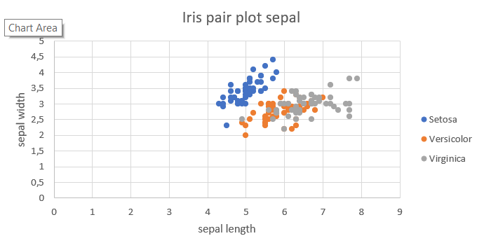
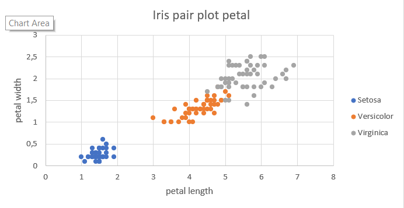
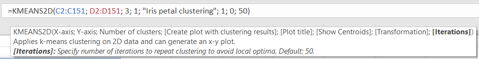
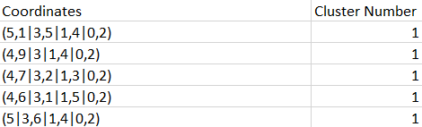

2D K-Means Clustering
The function KMEANS2D serves as an addition to the regular KMEANS.
It can only be applied to 2-dimensional data and can show you a plot of the results.
This article builds on the previous guide on the regular "K-Means Clustering".
We recommend reading the other article before proceeding with the current one.
The reason for a separate K-Means Clustering function for two dimensions is, that diagrams can be created in 2D.
Example
Once again, we are using the Iris flower data set.
As we might have noticed from the pair plots below, the petal measurements have more predictive value as clusters can be observed in Figure 3.
In Figure 2 however, the crosssections of the measurement sets are far greater.
As already mentioned, KMEANS2D can only process 2-dimensional data, therefore it would be reasonable to choose the petal measurements.
Note, that for optimal performance, you should not leave out any data by using the regular KMeans.
|  |  |
|---|---|
| Figure 1: Pair plot with sepal lengths and widths | Figure 2: Pair plot with petal lengths and widths |
To apply KMeans2D, we separately select the petal length and width as data for the x and y-axis.
The number of clusters can also stay as 3 because we still have three species as classes.
We would like to plot a diagram of the found clusters, therefore the next parameter will be set to 1.
"Iris petal clustering" will be shown as the title of the plot and the cluster visibility is set to 1.
The last two parameters are set to the default values as in the previous article.

Figure 3: 2D K-Means Clustering settings
After executing the function, a new table will be pasted containing the (possibly scaled) coordinates and their computed cluster (Figure 5).

Figure 5: First entries from the K Means Clustering result
Settings
To apply the clustering to your data, the KMEANS2D function requires two compulsory and three optional parameters.
The compulsory parameters consist of:
X-axisis the Excel cell range for the first dimension of the data entries.Y-axisis the Excel cell range for the second dimension of the data entries. Note, that the header (top row containing the column names) should not be included.Number of clustersis the number of clusters, that you expect.
The next three parameters activate the unique feature of this function, the data plot:
Create plot with clustering resultsentering a 1 will create a 2D plot of the data, the default is 0.Plot titleis a string, that will be used as the title of the created plot.Show Centroidswill show the positions of each centroid if 1 is entered. For the default value 0, the centroid will not be visible.
Each cluster has a centroid, which can be thought of as the center of mass of the data points assigned to the respective cluster.
Transformation- 0 will perform the algorithm on the raw data
- 1 will apply the gaussian normalization by subtracting the data by its mean and diving it by the standard deviation.
- 2 will apply the min-max normalization by subtracting the data by its minimum value and diving it by the min-max spread.
Iterationsspecifies the number of steps, that will be performed, the default is 50. For larger data sets, usually more steps are required, however, the runtime might noticeably increase.